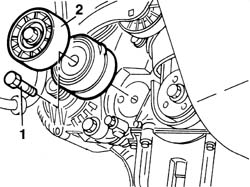
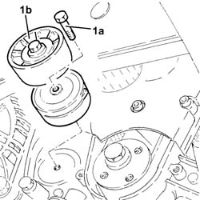
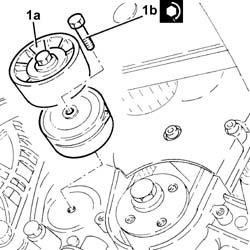

1092G14 engine component single belt mobile tensioner - r + r
- Path
- Procedures > 10 ENGINE > 1092 ENGINE COMPONENT MISCELLANEOUS DRIVES > 1092G single drive belt for various engine components > 1092G14 engine component single belt mobile tensioner - r + r
- Kind
- repair procedure (removal / refitting; the operation number is the code)
- Applies to
- all engines; all production periods
- Interactive page
- https://sloeber94.github.io/elrnDB-fDbl/en/#/2584479
Applies to: all engines; all production periods
 Removing
Removing
 Refitting
Refitting7055B54 under-engine guard - r r
1092G10 single engine belt r r
1092A10 Crankshaft services PULLEY - R.R.
1. Withdraw the retaining bolt.
2. Remove the auxiliary drivebelt automatic tensioning device.

Applies to: all engines; all production periods
Removing
RefittingPosition the vehicle on the ramp.
Proceed with the removal 4450B04 right front wheel r r .
Proceed with the removal 1092G10 single engine belt r r .
Proceed with the removal 1092A10 Crankshaft services PULLEY - R.R. .
1. Undo the bolt (1a) and remove the single drive belt tensioner (1b).

Applies to: all engines; all production periods
Refitting
RemovingPosition the auxiliary drivebelt automatic tensioning device.
Tighten the bolt securing the device to the mount to torque.
 | Fastening | Component | Ø | Value (daNm) |
|---|---|---|---|---|
- | Bolt | SINGLE SERVICES MOBILE BELT TENSIONER | M8 | 2.5 |
1092A10 Crankshaft services PULLEY - R.R.
1092G10 single engine belt r r
Applies to: all engines; all production periods
Refitting
Removing1. Place the engine components single drive belt moving tensioner (1a) back in its housing and fix it tightening the bolts (1b) to the recommended torque.
| Fastening | Component | Ø | Value (daNm) |
|---|---|---|---|---|
1b | Bolt | SINGLE SERVICES MOBILE BELT TENSIONER | M8 | 2.3 ÷ 2.8 |

Applies to: all engines; all production periods
Proceed with the refitting 1092A10 Crankshaft services PULLEY - R.R. .
Proceed with the refitting 1092G10 single engine belt r r .
Proceed with the refitting 4450B04 right front wheel r r .
Remove the car from the ramp.
Topics linked from this page (4)
- 1092A10 Crankshaft services PULLEY - R.R.
- 1092G10 single engine belt r r
- 4450B04 right front wheel r r
- 7055B54 under-engine guard - r r